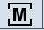
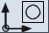

In the "Parameter", "Program", "Program Manager", "Diagnosis" and "Commissioning" operating areas, the status display consists of the first line from the large statue display.
Active operating area and mode
Display | Meaning |
|---|
Active operating area |
|  | "Machine" operating area With touch operation, you can change the operating area menu here. |
|  | "Parameter" operating area |
| | "Program" operating area |
 | "Program Manager" operating area |
| | "Diagnosis" operating area |
 | "Commissioning" operating area
|
Ctrl-Energy - Power rating display |
 | The machine is not working productively. |
 | The machine is working productively and energy is being consumed.
|
| | The machine is feeding energy back into the supply system.
|
The power display must be switched on in the status line.
Additional information on configuring is provided in the
Ctrl‑Energy System Manual. |
Active mode or submode |
 | "JOG" mode |
| | "MDA" mode |
 | "AUTO" mode |
 | "Teach In" submode |
| | "REPOS" submode |
| | "Ref Point" submode |
Alarms and messages
Display | Meaning |
|---|
| | Alarm display The alarm numbers are displayed in white lettering on a red background. The associated alarm text is shown in red lettering. An arrow indicates that several alarms are active. An acknowledgment symbol indicates that the alarm can be acknowledged or canceled. |
 | NC or PLC message Message numbers and texts are shown in black lettering. An arrow indicates that several messages are active. |
| | Messages from NC programs do not have numbers and appear in green lettering. |
Change color display
You can change the user-specific colors for the display of alarms and messages.
 | Machine manufacturer Please observe the information provided by the machine manufacturer. |